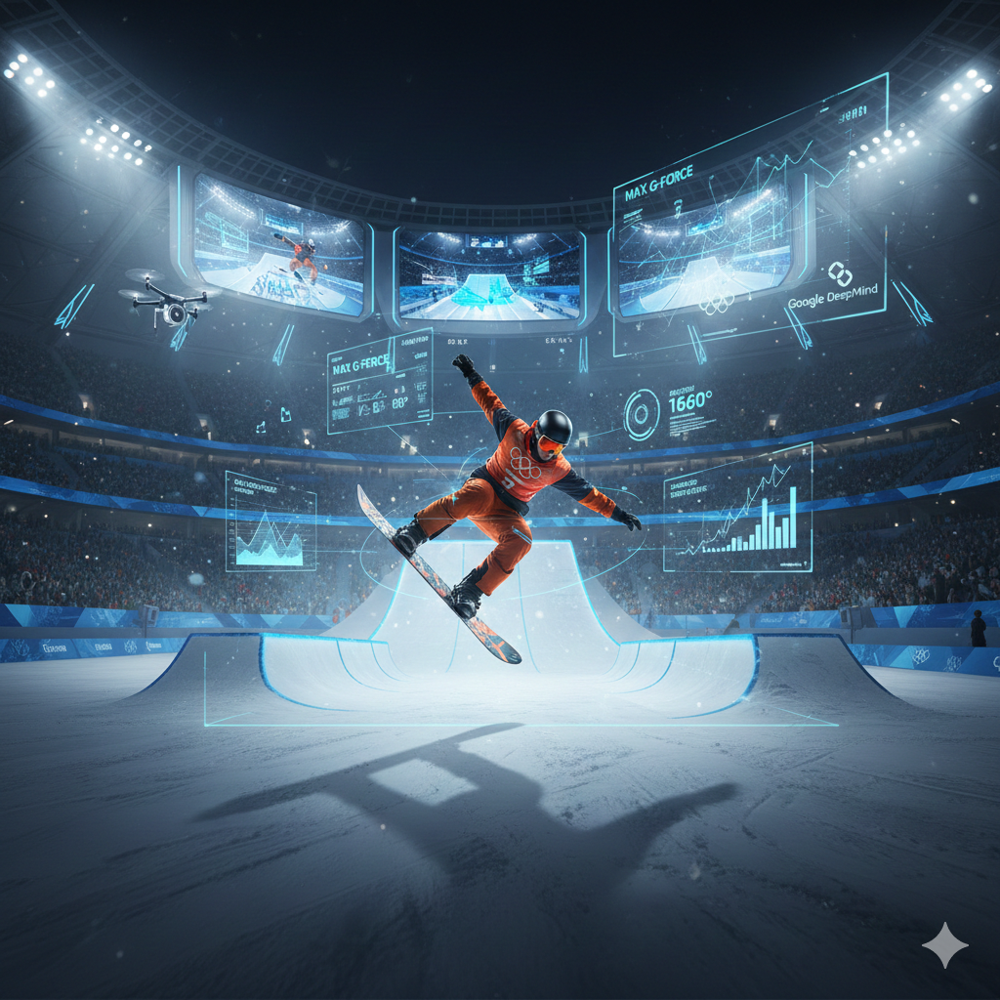

AI at the Olympics: The New Standard for Performance Tracking
February 8, 2026

At the Olympic level, AI-powered performance tracking is transforming how athletes prepare, compete, and recover. Motion capture, wearables, and computer vision systems allow coaches and trainers to track every movement and decision during practice and competition.
In basketball, AI helps teams analyze shot selection, defensive positioning, and overall movement patterns on the court. This data-driven approach improves efficiency, reduces injuries, and informs in-game strategy decisions.
Olympic teams are setting the benchmark for AI integration, and as the technology becomes more accessible, student-athletes at the collegiate and even high school level will see similar benefits in training and performance tracking.